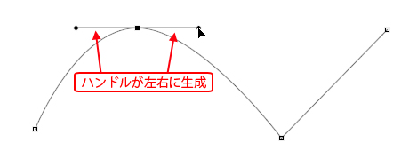
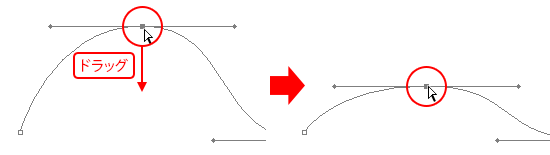
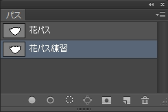

第4章 選択範囲
第2節 選択範囲の応用
本項では、ベクトルデータであるパスと、パスを利用した選択範囲の作成を学習します。
第5項 パスを使った選択範囲の作成
この項で学習する内容
- [ペンツール]を使ったパスの作成方法を習得する。
- 作成したパスを利用した選択範囲の作成方法を習得する。
ベクトルデータとパス
以前に学習しましたが、Photoshopが扱う画像データは通常、
ピクセルの集合体であるビットマップデータとして扱われます。
しかしながら、Illustratorのようなアンカーポイントと呼ばれる点をつなぎ合わせ
パスと呼ばれる線で描画するベクトルデータを扱うこともできます。
このベクトルデータについては図形描画の項でも「シェイプレイヤー」として扱いましたが、
この項では、ベクトルデータで描かれたパスを利用して選択範囲を作成する方法を学習します。
パスを利用する理由
通常、ピクセルの集合体であるビットマップデータとして描かれた画像は
紙に鉛筆で描くのと同様に、形状を修正するためには[消しゴムツール]などで一旦消してから
再度、描画しなおす必要があります。
それとは異なり、パスは「アンカーポイント」や「ハンドル」を操作し、シェイプ形状を作成します。
この「アンカーポイント」や「ハンドル」を持つパスは、形状の修正が容易で、
対象に対して正確な選択範囲を作成する上で、この形状修正が容易である点が非常に有利に働きます。
ペンツールの基本操作
では、実際に[ペンツール]を使用してパスを描画しましょう。
Illustratorを使用した経験のある方は、基本的な操作は全く同じだと思ってください。
まずは新規ドキュメントを作成します。
メニューバーの[ファイル]-[新規]を選択し、
[新規ドキュメント]ダイアログボックスが表示されたら、
[プリセット]に「Photoshop初期設定」を選択します。
※それ以外の設定は変更する必要はありません。
[ツールパネル]から[ペンツール]を選択します。
コントロールパネルから[パス]モードを選択します。
直線のパスを描画する
まずは「直線」を描画します。
下図を参考に、画像内をクリックすることで、
クリックした箇所にアンカーポイントを置いた直線が描画されます。
直線を曲線に変更する
続いて、描いた直線を曲線に修正します。
[ペンツール]アイコンを長押しし、[アンカーポイントの切り替えツール]を選択します。
[アンカーポイントの切り替えツール]で、先ほど作成したパスの
アンカーポイント上をドラッグします。
アンカーポイントからハンドルと呼ばれる線が生成され、
直線だったポイントが曲線に変化します。

曲線のパスを描画する
では、今度は最初から曲線を描画します。
ツールを[ペンツール]に戻し、下図を参考に
アンカーポイントを置く場所でドラッグしながらパスを描画することで
アンカーポイントからハンドルが生成され、曲線が描かれます。
アンカーポイントとハンドルの修正
作成したパスのアンカーポイントとハンドルを修正します。
[ツールパネル]の[パスコンポーネント選択ツール]を長押しし、
[パス選択ツール]に切り替えます。
[パス選択ツール]はアンカーポイントやハンドルを個別に選択することができます。
まず任意のアンカーポイントを1度クリックして選択し、
ドラッグして位置を移動させてみましょう。

続いて、アンカーポイントから伸びるハンドルの端点をドラッグして
曲線の形状を修正してみましょう。

通常、ハンドルの端点は一方を動かすと、もう一方もシーソーのように付いて動きます。
これをハンドルの端点を別々に動かしたい場合は、
[アンカーポイントの切り替えツール]を使用します。
[アンカーポイントの切り替えツール]を選択し、
任意の曲線のハンドルの端点をドラッグして動かしましょう。
片側のハンドルのみ動くことが分かります。
最後に、曲線を直線に修正する方法を確認します。
[アンカーポイントの切り替えツール]でハンドルを持つアンカーポイントをクリックします。

アンカーポイントから伸びるハンドルが消えて、曲線が直線に変化します。
他に、[アンカーポイントの追加ツール]と[アンカーポイントの削除]ツールを使うことで、
パス上にアンカーポイントを追加したり、不要なポイントを削除することができます。

以上でパスを描く際の基本操作は終了です。
パスを描くのに必要な基本ツールをまとめてみます。
- [ペンツール]：クリックしながら描くと直線、ドラッグしながら描くと曲線が描ける。
- [パス選択ツール]：個別のアンカーポイントの位置やハンドルの長さを修正できる。
- [アンカーポイントの切り替えツール]：下記の3つの機能を持つ。
・ハンドルの無いアンカーポイントをドラッグしてハンドルを生成する。
・曲線部のアンカーポイントをクリックしてハンドルを削除する。
・ハンドルの端点をドラッグして、片側のハンドルだけを動かす。
では、ファイルを閉じて次に進みます。
パスを使って選択範囲を作成する
今度は実際に画像を下絵にパスを描き、選択範囲を作成してみます。
まずは素材フォルダ「PS04」から、素材ファイル4_2_5.psdを開きましょう。
[ツールパネル]から[ペンツール]を選択します。
コントロールパネルから[パス]モードを選択します。
ペンツールで中央の花の輪郭線に沿ってパスを描画します。
上手くパスを描くポイントは、一筆書きできれいに描こうと思わないことです。
下図のようにまず、大まかに直線のパスを作成します。

次に[アンカーポイントの切り替えツール]や[パス選択ツール]、
[アンカーポイントの追加・削除ツール]などを駆使して
微調整を行い、対象をきれいに選択するほうが効率的です。

花の形のパスが作成できたら、
メニューバーの[ウィンドウ]-[パス]を選択し、[パスパネル]を表示します。
あらかじめ作成して用意していた「花パス」の他に、
「作業用パス」という名前で表示されているパスが、今作成したパスになります。
作業用パスとは、パスパネルに一時的に表示されるパスのアウトラインデータで、
パスとしてはまだ保存されていません。
保存せずに追加のパスを描画すると、以前の作業用パスは削除されます。
パスを描画したら、必ず保存するようにしましょう。
では、パスを保存します。
［パスパネル］の右上パネルメニューから、［パスを保存］を選択します。
[パスを保存]ダイアログボックスが表示されます。
名前を「花パス練習」と入力し、[OK]ボタンをクリックします。
パスが保存されます。

パスを使用して選択範囲を作成する
このファイルには、すでに「花パス」という名前でパスが保存されています。
[パスパネル]から「花パス」を選択します。
[パスパネル]右上のパネルメニューから、[選択範囲を作成]を選択します。
[選択範囲を作成]ダイアログボックスが表示されます。

[ぼかし半径]を《0px》と設定し、[OK]ボタンをクリックします。
パスデータから選択範囲が作成されます。
パスを使った選択範囲の作成は、比較的エッジのはっきりした
直線やスムーズな曲線の多い対象を選択する際に
正確に選択範囲が作成できるため便利です。
選択範囲を作成する対象に合わせて、さまざまなツールを駆使して
選択範囲を作成するようにしましょう。
ワンポイント
CS6以降は、
ツールパネルの[ペンツール]選択時、
コントロールパネルからも[選択範囲を作成]ダイアログボックスを表示できるようになりました。
この項のまとめ
- [ペンツール]を使ったパスの描画方法
- ・[ペンツール]でクリックしながら描くと直線、ドラッグしながら描くと曲線が描ける。
・[パス選択ツール]で個別のアンカーポイントの位置やハンドルの長さを修正できる。
・[アンカーポイントの切り替えツール]は、ハンドルを生成する、ハンドルを削除する、片側のハンドルだけを動かす、という3つの機能を持つ。
・[アンカーポイントの追加・削除ツール]でパス上にポイントを追加したり、不要なポイントを削除できる。 - [パスパネル]を利用した選択範囲の作成
- ・メニューバーの[ウィンドウ]-[パス]から[パスパネル]が表示できる。
・作成したパスは「作業用パス」として仮保存されるため、パネルメニューより[パスを保存]を選び、パスを保存する。
・[パスパネル]に保存したパスを選択した状態で、パネルメニューより[選択範囲を作成]を選び、パスから選択範囲を作成できる。
以上でこの節の学習は終了です。
ファイルは閉じて次の節へ進んでください。